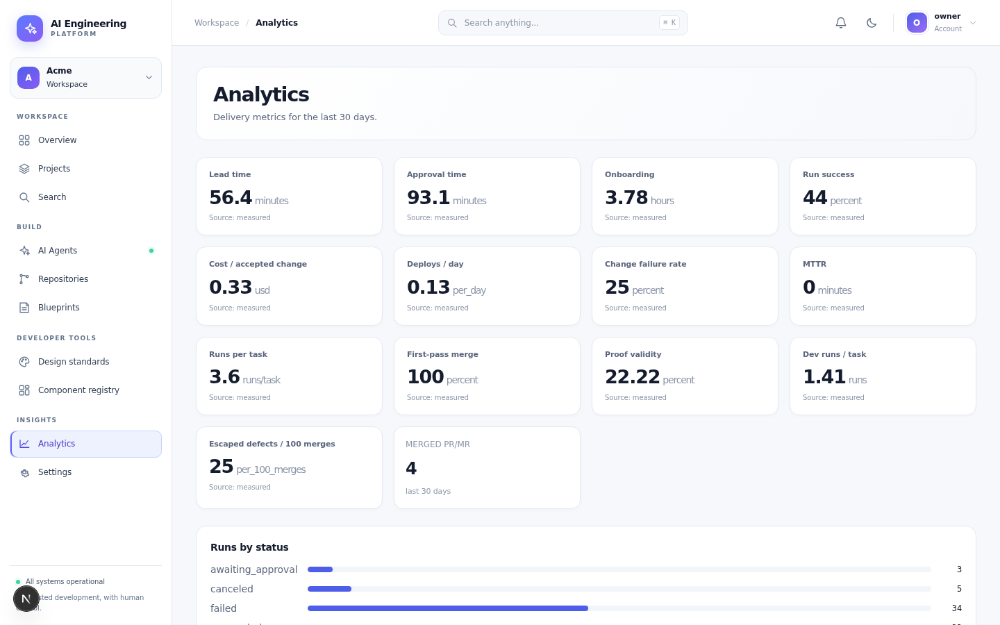

Analytics
Analytics answers two questions: how fast is delivery, and is the quality improving?

Delivery and outcome metrics for the selected period.
Metrics
| Metric | What it means |
|---|---|
| Lead time | From ready task to merged change |
| Approval time | Time spent waiting for human decisions |
| Onboarding | Time from project creation to the first accepted task |
| Run success | Completed runs divided by all runs |
| Cost per accepted change | Provider cost divided by merged changes |
| First-pass merge | PRs merged without a rework cycle |
| Proof validity | Acceptance proofs that referenced real evidence |
| Runs per task | How much agent work a task needed |
| Change failure rate | Merged changes that required a fix |
| Escaped defects | Defects found after merge, per 100 merges |
Metrics marked measured come from recorded events. Metrics marked na have no data yet; the platform does not invent a value.
Filtering
Use the period selector to compare delivery windows. Project filters narrow the view to one product or client.
Reading the numbers
- A short lead time with a high rework rate is not an improvement.
- A high proof validity rate with a low first-pass merge rate suggests the plan or context needs work.
- Approval time is often the largest lever; it is a human process metric, not an agent metric.
Exports
The API exposes the same analytics data. Use it for a dashboard or a weekly report. Large exports should page through the API rather than scrape the UI.